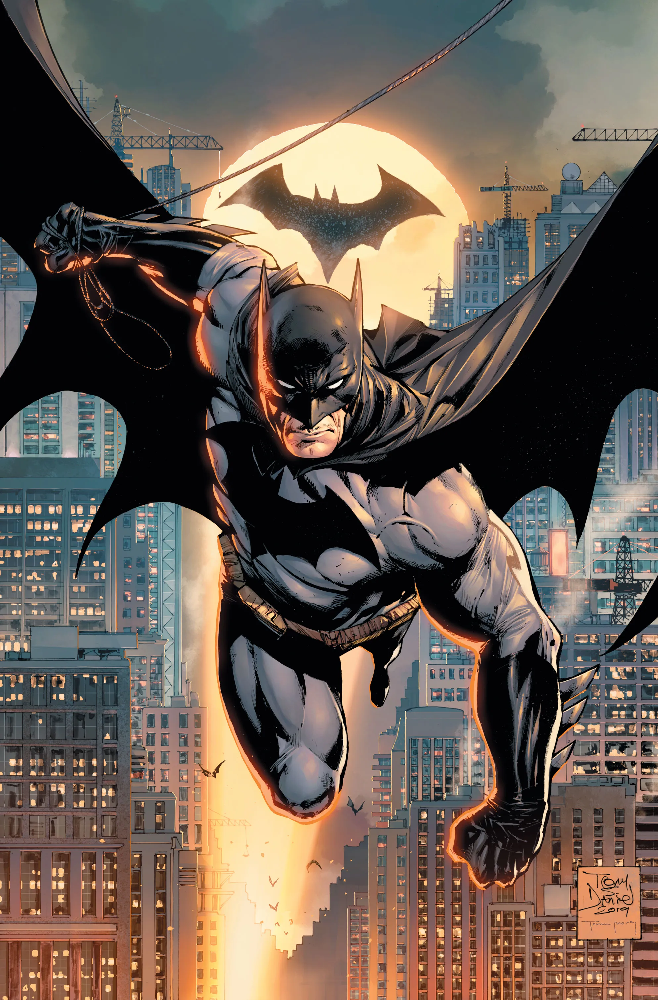

Who is Batman?
Batman, also known as Bruce Wayne, is one of the most iconic superheroes in comic book history. After witnessing his parents' tragic murder as a child, he dedicated his life to fighting crime in Gotham City. Unlike other superheroes, Batman possesses no superpowers but relies on his intellect, detective skills, and advanced technology. His mission is to instill fear in criminals and protect innocent citizens. Batman operates in secrecy, using the Bat-Signal as his primary method of communication with the Gotham City Police Department. He maintains a strict moral code, refusing to kill even the worst criminals. His legacy as the "World’s Greatest Detective" has earned him respect across the DC Universe.
Batman’s Mission
Batman is more than just a crime-fighter; he is a symbol of justice and hope. Working from his hidden Batcave beneath Wayne Manor, he uses his wealth to fund his crime-fighting activities. He trains relentlessly, mastering various forms of martial arts, forensic science, and psychological warfare. His most trusted ally is Commissioner Jim Gordon, who helps him navigate Gotham’s corrupt justice system. Batman’s war on crime extends beyond the city, as he often joins forces with superheroes like Superman and Wonder Woman. Despite his immense dedication, Bruce Wayne struggles with the emotional burden of his double life. His greatest fear is failing Gotham and allowing criminals to take over.
Batman's Gadgets
Batman is known for his impressive array of gadgets...
- Batmobile - The Dark Knight’s iconic car...
- Batarang - His signature throwing weapon...
- Learn More About Gadgets
Gotham City
Gotham is a dark and dangerous city...

The Batcave
Hidden beneath Wayne Manor, the Batcave is Batman’s secret headquarters...

Batman's Gadgets & Vehicles
One of Batman’s greatest advantages is his collection of high-tech gadgets. His utility belt contains Batarangs, smoke bombs, grappling hooks, and various other tools that aid him in battle. The Batmobile, one of the most iconic vehicles in comic book history, is equipped with advanced armor and weaponry. Batman also wears a specialized suit with reinforced Kevlar, night vision, and shock-resistant padding. His Batcomputer allows him to monitor Gotham from the Batcave, gathering intelligence on criminal activity. Over time, his technology has evolved, ensuring that he remains one step ahead of his enemies. These gadgets, combined with his training and strategy, make him one of the most formidable heroes in existence.